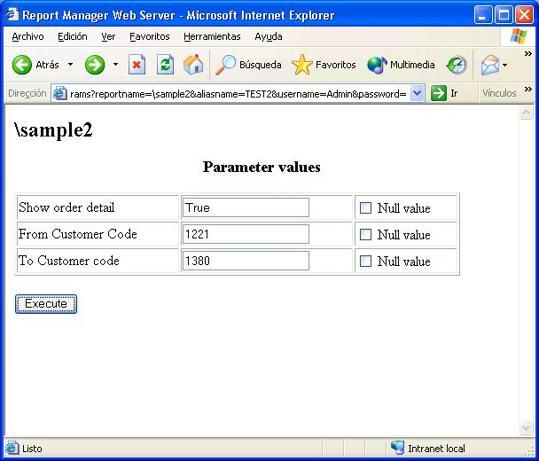

The web server has predefined commands
The entry point por the web server is the login page:
http://localhost/cgi-bin/repwebserver.dll/login
To test installation you can call version command, with version command you also obtain the location of configuration files.
http://localhost/cgi-bin/repwebserver.dll/version
After login you can execute configured reports, see Installation instructions about how to configure the available reports and users.
You can operate the report web server by providing a complete URL with required param values, that is if you execute a report, you can add it to favorites because all execution information is stored in the provided URL.
If you need security, run the web server in a secure web server so the URL and all the informatino will be encoded.
If the web report server is installed in Linux you should execute:
http://localhost/cgi-bin/repwebexe.bin/version
This are a few screenshots of the report web server.
The login page:
The index page (selection of aliases):
The available reports page:
The report parameters page:

The resulting report: